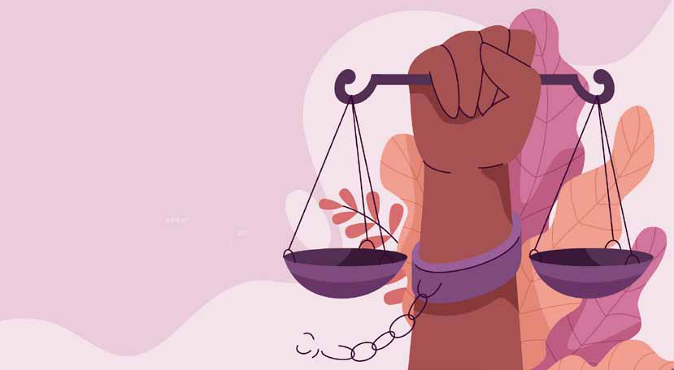

Dharma, Justice and Human Rights
Dharma, Justice and Human Rights
Jaffna Monitor hellojaffnamonitor@gmail.com 54 D harma is a systematic Sanskrit concept that includes traditions, obligation, morals, laws, order, and justice. It was a unique concept of dharma that kept checks and balances on sovereign officials and prevented them from becoming autocratic and anarchist. It also provided the common man with a protective shield against the dictatorship of sovereign officials. Ordinary citizens had more privileges and fewer responsibilities relative to the state's highest officials. The greater the authority, the less his privileges were, and the more extensive his responsibilities became. Dharmaśāstras or Righteous Science, are the collections of rules of life. Religion has always played a crucial role in the advancement of human rights, particularly in the advancement of human dignity (Harees-2012). Human rights defined in Vedic literature tend to be fundamental, unchangeable, and place a greater emphasis on human obligations than on human rights. The world came up with the high ideals of liberty, freedom, and fraternity, during the French revolution (Setzer-2013). These three principles are enshrined in almost every democratic constitution in the world. Young Hindus are schooled on concepts of Dharma. Buddhists from a different prism. Equally Jurists such as Upendra Baxi wrote about, ’Taking suffering seriously’ to Justice Bhagwati and Justice Krishna Iyer who took the Supreme Court to the poor, the underclass and those discriminated. Pakistan had Justice Dharma, Justice and Human Rights BY: Jeevan Thiagarajah Former Governor Northern Province/ Former Member Commissioner Election Commission.

Jaffna Monitor hellojaffnamonitor@gmail.com 55 Dorab Patel, Asma Jehangir, and I.A. Rehman. In Sri Lanka we had S. Nadesan Q.C. This is what was said in tribute at the Supreme Court on his passing. Reference to Death of late Mr. Nadesan, Queens Counsel made in Sri Lanka Supreme Court in Ceremonial Sitting at Hulftsdorp, Colombo, Sri Lanka on 16 January 1987. "...Nadesan was a front-rank lawyer who was a crusader for human rights and an aggressive champion of social justice...He will be gratefully remembered by many a person coming from various strata of our society. The Civil Rights Movement has lost one of its founder members and an ardent human rights activist and the country has lost a pre-eminent lawyer with a social conscience..." Sri Lanka Chief Justice S. Sharvananda When one provides free legal aid to the vulnerable one sees all manner of injustices. Combine with visits to Prisons, Police Stations, places of detention, sites of atrocities and courts one is informed of inhuman wrongs. These are but a few instances and contexts which influence once belief in the importance of human rights. The Responsibility to Protect in Sri Lanka Due to the vagaries of our history in the past 4-5 decades human rights of citizens has been a topic of debate and discussion and even censure.
The principle of the responsibility to protect is based upon the underlying premise that sovereignty entails a responsibility to protect all populations from mass atrocity crimes and human rights violations. This passage is mentioned in the context of an introduction of why the state is held responsible to protect our citizens. What are the three rules of sovereignty? Domestic sovereignty – actual control over a state exercised by an authority organized within this state. Interdependence sovereignty – actual control of movement across the state's borders. International legal sovereignty – formal recognition by other sovereign states. The sovereign state's responsibility and accountability to both domestic and external constituencies must be affirmed as interconnected principles of the national and international order. Such a normative code is anchored in the assumption that in order to be legitimate sovereignty must demonstrate responsibility. Sovereignty is a political concept that refers to a dominant power or supreme authority. In a monarchy, supreme power resides in the sovereign, such as a king or queen. In modern democracies, sovereign power rests with the people and is exercised through representative bodies such as Congress or Parliament. In Sri Lanka Laws and policies are guided by the Directive Principles of State Policy found in our Constitution. K. Mathan in FUNDAMENTAL RIGHTS VS DIRECTIVE PRINCIPLES OF STATE POLICY: A COMPARATIVE ANALYSIS OF SRI LANKAN POSITION WITH INDIA has looked at the applicability. ‘The Supreme Court of Sri Lanka emphasized the importance of directive principles of state policy in the Thirteenth Amendment to the Constitution Bill. Although it is expressly declared in the Constitution that the directive principles
Jaffna Monitor hellojaffnamonitor@gmail.com 56 and fundamental duties ‘do not confer or impose legal rights or obligations and are not enforceable in any Court or Tribunal’ Courts have linked the Directive Principles to the public trust doctrine and have stated that these principles should guide state functionaries in the excise of their powers. WHAT ARE DIRECTIVE PRINCIPLES? Directive principles are principles intended to guide the State when making policy. Here are some examples: ‘[Article] 27(2): The State is pledged to establish in Sri Lanka a democratic socialist society, the objectives of which include: • The full realization of the fundamental rights and freedoms of all persons; • The promotion of the welfare of the People by securing and protecting as effectively as it may, a social order in which justice (social, economic and political) shall guide all the institutions of the national life; • The realization by all citizens of adequate standard of living for themselves and their families, including adequate food, clothing and housing, the continuous improvement of living conditions and the full enjoyment of leisure and social and cultural opportunities, etc. etc. 27(7): The State shall eliminate economic and social privilege and disparity, and the exploitation of man by man or by the State. 27(8): The State shall ensure that the operation of the economic system does not result in a concentration of wealth and the means of production to the common detriment. 27(9): The State shall ensure social security and welfare.’ I argue human rights is not an abstract notion or a fashionable statement. It requires serious consideration. The failure has serious consequences. It goes beyond the traditional understanding of illegal arrest, detention, torture or disappearances. The canvass as seen is far wider. Protecting citizens I doubt if the Human Rights Commission vets or filters cabinet decisions for compliance of the directive principles. The cabinet secretary is unlikely to advice the cabinet of the need to do so either. The Public Services Commission needs to ask if its job is only the removal, appointment or transfer of public officials. The Administrative Services Tribunal does a stirling job of protection. The Governor at the Province has a serious task of ensuring ‘protection’. The absence such executive responses leads to violations. The Northern Provincial Public Services Commission with the incumbent Governor then as Chairman was given a new of set of objectives to fill gaps seen in the protection and promotion of development of the provincial cadre. A particular feature was seen in this text,’ The Provincial Public Service was informed of the intention to do so in December and specifically to, to promote the wellbeing of Provincial Public Service Officers of the Northern Province with career development paths , protection from discrimination, harassment including sexual harassment, victimization, witness protection of whistle blowers, timely transfers, supporting access to statutory claims, leave, allowances, access to fundamental facilities for sanitation, safe water, partaking of meals, safety of personal belongings and official data’.